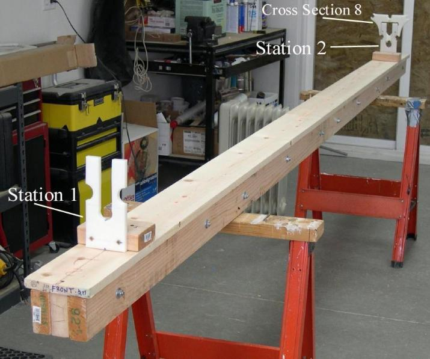

| Strongback | Menu Previous Page Next Page |
|  |
Overview
The strongback provides a stable building platform for the frame while also keeping the frame in proper alignment.
The strongback is comprised of a base made of 2x4 pine sections and a top plate made of 1x6 pine. The 2x4's are held together with carriage bolts. The top plate is screwed to the 2x4's. The longest sections of this 13 foot strongback are 8' long. The entire assembly can be broken down for storage. The strongback is secured to the sawhorses with 4 deck screws. The sawhorses are attached 3 feet from the ends of the strongback. Only cross sections 1 and 8 (Sea Ranger) are attached to the strongback during frame construction. Materials Top Plate - 1x6 pine (13ft) Base - 2x4 pine ( 39ft ) Lag Bolts - 10ea Washers/Nuts - 10ea 1.5" Deck Screws 2.5" Deck Screws 2 sawhorses |
|
Stations - There are 2 HDPE stations attached to the strongback during construction. The stations secure the first and last cross sections (1 and 8). On the Sea Ranger, they are placed 11 feet apart. Though the kayak has a 17 foot LOA, the strongback need only be long enough to accommodate these two stations. The remainder of the frame overhangs the ends. The shorter strongback makes it easier to drill and attach the stem plates since the strongback isn't in the way. The stations are attached to a 2x4 plate with deck screws. The cross sections are in turn screwed to the stations. As an alternative, the stations can also be constructed of wood, though the HDPE stations will hold up better with repeated use.
|
|